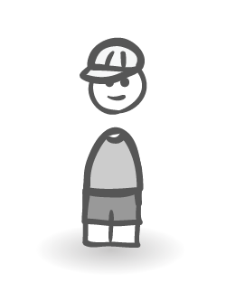
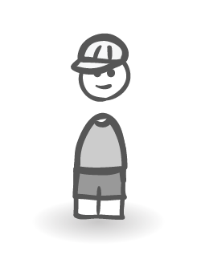
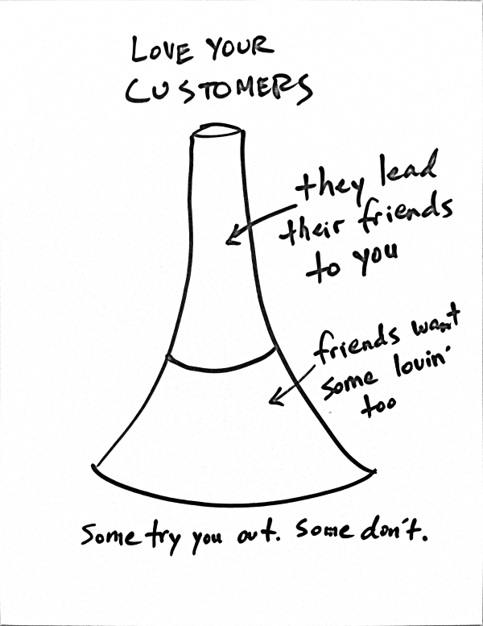
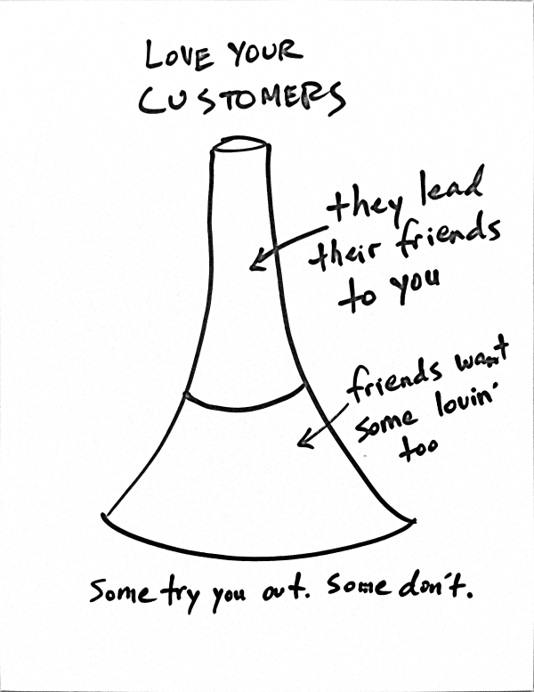

Open source <3


Project-centric
Follow & stars
API et outils qui classent

Github archives + Google Big Query
1M+ JavaScript repo


 



Package manager = app store version gratuite
Nouveaux avantages

 

De Ben Chestnut, Mailchimp
Gauche
suivent des dogmes, des vieilles pratiques
beaucoup d'argent
Droite
reflechissent, nouveau market
beaucoup de travail
HTML5 ★ BOILERPLATE
Paul Irish 9.4k 99k
Chris Coyer 2.4k 94kAddy Osmani 5.8k 50k
Lea Verou 3.3k 40kMathias Bynens 1.4k 16k
Sindre Sorhus 1.5k 10k
Nicolas Callagher 2.2k 17k
Divya Manian 1k 16k
Profiter de la viralite
ribs

Stabilite
Qualite
Extensibilite
Personnalisation
Freemium
Penetration
Diversification
Social
Le modele proprietaire est bride
Stabilite, qualite superieure
Meilleure QA
Gens investi (surtout dans l'open source)
Colle aux besoins
Feedback pro-actif
Bounties
Quels risques?
IP
Perte
Concurrence